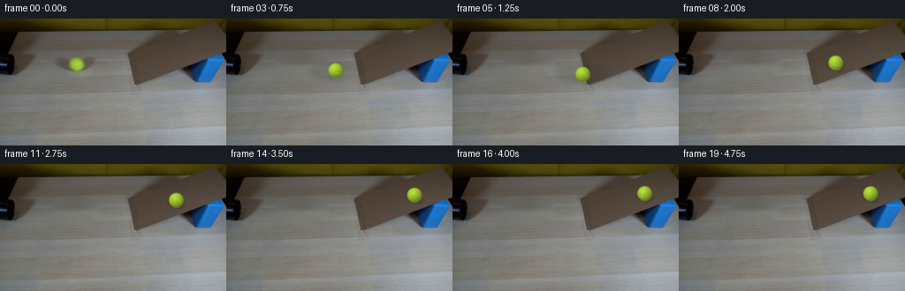
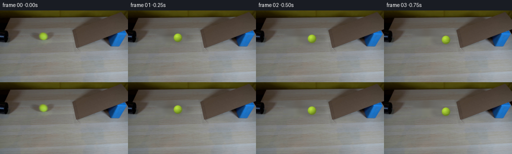
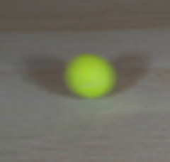
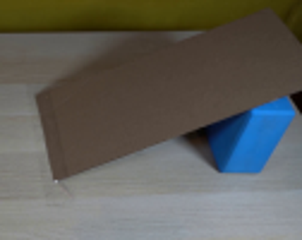
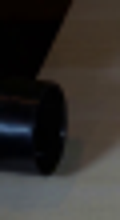
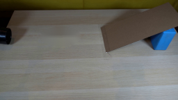
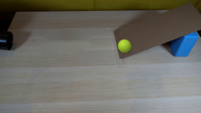
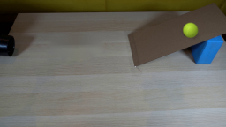

CODING AGENTS AS PIXEL WORLD MODELS
traex/GPT-5.6-Sol · 0020
点击播放 · 原生 RGB 像素
逐轮保存的候选
回放视频、检查图与代码变化。
每份候选均可单独播放。实际图片检查记录在下方工具轨迹中。
候选 01播放与检查图
点击播放 · 原生 RGB 像素


展开代码变化
--- 上一保存版本
+++ 本次保存版本
@@ -0,0 +1,153 @@
+"""Generate the requested locked-off scientific-demonstration video.
+
+The supplied photograph is retained as the plate. Only the tennis ball and its
+soft, physically attached shadow are animated; the original ball is removed
+from subsequent frames by local texture-aware inpainting.
+"""
+from pathlib import Path
+import math
+import cv2
+import numpy as np
+from PIL import Image, ImageDraw, ImageFilter
+import artifact_io
+
+HERE = Path(__file__).resolve().parent
+W, H = 256, 144
+FPS, COUNT = 4, 20
+
+
+def clean_plate(rgb: np.ndarray) -> np.ndarray:
+ """Remove the original ball plus its broad penumbra from the wood."""
+ bgr = cv2.cvtColor(rgb, cv2.COLOR_RGB2BGR)
+ mask = np.zeros((H, W), np.uint8)
+ # The shadow in the source is broad and horizontal (roughly x=56..116).
+ cv2.ellipse(mask, (87, 52), (31, 14), 0, 0, 360, 255, -1)
+ plate = cv2.inpaint(bgr, mask, 5, cv2.INPAINT_TELEA)
+ return cv2.cvtColor(plate, cv2.COLOR_BGR2RGB)
+
+
+def rgba_shadow(cx: float, cy: float, on_ramp: bool, speed: float) -> Image.Image:
+ """Soft area-light shadow, tighter while the ball is sitting on cardboard."""
+ S = 4
+ layer = Image.new("RGBA", (W*S, H*S), (0, 0, 0, 0))
+ d = ImageDraw.Draw(layer, "RGBA")
+ if on_ramp:
+ # Ramp plane runs up and right. Shadow is a close, slanted ellipse.
+ tile = Image.new("RGBA", (32*S, 22*S), (0, 0, 0, 0))
+ td = ImageDraw.Draw(tile, "RGBA")
+ td.ellipse((7*S, 7*S, 25*S, 15*S), fill=(10, 9, 7, 83))
+ tile = tile.filter(ImageFilter.GaussianBlur(2.2*S)).rotate(
+ -22, resample=Image.Resampling.BICUBIC, expand=False)
+ layer.alpha_composite(tile, (round((cx-16)*S), round((cy-7)*S)))
+ # Small contact shadow anchors the sphere to the inclined plane.
+ d.ellipse(((cx-7)*S, (cy+5.0)*S, (cx+7)*S, (cy+8.0)*S),
+ fill=(12, 10, 8, 80))
+ else:
+ # Match the broad soft shadow visible beneath the source tennis ball.
+ d.ellipse(((cx-29)*S, (cy-8)*S, (cx+30)*S, (cy+10)*S),
+ fill=(35, 32, 25, 37))
+ d.ellipse(((cx-10)*S, (cy+5)*S, (cx+10)*S, (cy+9)*S),
+ fill=(24, 24, 18, 66))
+ layer = layer.filter(ImageFilter.GaussianBlur(3.3*S))
+ return layer.resize((W, H), Image.Resampling.LANCZOS)
+
+
+def draw_ball(cx: float, cy: float, roll_angle: float) -> Image.Image:
+ """Render a fuzzy, shaded tennis ball at subpixel position."""
+ S = 5
+ size = 25*S
+ yy, xx = np.mgrid[0:size, 0:size].astype(np.float32)
+ # Keep the diameter consistent with the 16-17 px ball in frame zero.
+ pcx = size/2 + (cx-math.floor(cx))*S
+ pcy = size/2 + (cy-math.floor(cy))*S
+ X = (xx-pcx)/S
+ Y = (yy-pcy)/S
+ radius = 8.45
+ rr = np.sqrt(X*X + Y*Y)
+ inside = rr < radius
+ z = np.sqrt(np.maximum(0.0, 1.0-(rr/radius)**2))
+
+ # Lambertian illumination from upper-left plus gentle ambient light.
+ nx, ny, nz = X/radius, Y/radius, z
+ light = np.maximum(0.0, nx*(-0.34) + ny*(-0.52) + nz*0.78)
+ shade = 0.63 + 0.42*light
+ base = np.zeros((size, size, 4), np.float32)
+ felt = np.array([164., 202., 49.], np.float32)
+ base[..., :3] = felt[None, None, :] * shade[..., None]
+
+ # Fine felt variation is fixed in ball coordinates and visibly rotates.
+ a = roll_angle
+ xr = X*np.cos(a) + Y*np.sin(a)
+ yr = -X*np.sin(a) + Y*np.cos(a)
+ grain = (np.sin(xr*4.3 + yr*1.1) + np.sin(yr*5.7-xr*0.9))*1.7
+ base[..., :3] += grain[..., None]
+
+ # A subdued curved tennis-ball seam rotates with the sphere.
+ seam_dist = np.abs(xr - (2.7 - 0.055*yr*yr))
+ seam = (seam_dist < 0.52) & inside & (np.abs(yr) < 6.5)
+ seam_mix = np.clip((0.60-seam_dist)/0.40, 0, 1) * seam
+ seam_col = np.array([188., 214., 76.], np.float32)
+ base[..., :3] = (base[..., :3]*(1-seam_mix[...,None]*0.45)
+ + seam_col*seam_mix[...,None]*0.45)
+
+ # A tiny specular lift gives the same soft highlight as the source photo.
+ highlight = np.exp(-((X+2.1)**2+(Y+2.8)**2)/9.0)*13.0
+ base[..., :3] += highlight[..., None]
+
+ # Feathered/fuzzy circumference, then camera-scale optical blur.
+ alpha = np.clip((radius+0.55-rr)/1.05, 0, 1)
+ alpha *= inside | (rr < radius+0.55)
+ base[..., 3] = alpha*255
+ base[..., :3] = np.clip(base[..., :3], 0, 255)
+ ball = Image.fromarray(base.astype(np.uint8), "RGBA")
+ ball = ball.filter(ImageFilter.GaussianBlur(0.34*S))
+ ball = ball.resize((25, 25), Image.Resampling.LANCZOS)
+
+ full = Image.new("RGBA", (W, H), (0, 0, 0, 0))
+ full.alpha_composite(ball, (math.floor(cx)-12, math.floor(cy)-12))
+ return full
+
+
+def trajectory(i: int):
+ """Rolling with a straight approach and gravity-driven ramp slowdown."""
+ t = i / FPS
+ # Initial horizontal motion (about 48 px/s), with weak rolling drag.
+ hit_t = 1.25
+ if t <= hit_t:
+ x = 87.0 + 49.2*t - 1.05*t*t
+ # World-straight track appears slightly diagonal in table perspective.
+ y = 52.0 + (x-87.0)*(10.7/59.9)
+ speed = 49.2 - 2.1*t
+ ramp = False
+ distance = x-87.0
+ else:
+ x0 = 146.9
+ tau = t-hit_t
+ v0, accel = 45.8, -14.8
+ travel = v0*tau + 0.5*accel*tau*tau
+ x = x0 + travel
+ # Centerline of the cardboard plane, from its low left edge upward.
+ y = 62.7 - 0.425*(x-x0)
+ speed = v0 + accel*tau
+ ramp = True
+ distance = (x0-87.0) + travel
+ # Rolling angle: distance/radius, sign chosen for rightward rolling.
+ return x, y, ramp, speed, -distance/8.45
+
+
+def generate() -> np.ndarray:
+ source = np.asarray(Image.open(HERE / "first_frame.png").convert("RGB"), dtype=np.uint8)
+ plate = clean_plate(source)
+ frames = np.empty((COUNT, H, W, 3), dtype=np.uint8)
+ frames[0] = source # generation contract: exactly pixel-identical
+ for i in range(1, COUNT):
+ x, y, on_ramp, speed, angle = trajectory(i)
+ canvas = Image.fromarray(plate).convert("RGBA")
+ canvas = Image.alpha_composite(canvas, rgba_shadow(x, y, on_ramp, speed))
+ canvas = Image.alpha_composite(canvas, draw_ball(x, y, angle))
+ frames[i] = np.asarray(canvas.convert("RGB"), dtype=np.uint8)
+ return frames
+
+
+if __name__ == "__main__":
+ artifact_io.save(generate(), HERE)
可观测工具轨迹
实际执行的命令与返回图片。
命令 1exit 0
/bin/bash -lc "cat prompt.txt && printf '\\n---RULES---\\n' && cat GENERATION_RULES.md"
命令 2exit 0
/bin/bash -lc "find . -maxdepth 2 -type f -printf '%p %s bytes\\n' | sort && printf '\\n--- ffmpeg ---\\n' && ffmpeg -version | head -3 && printf '\\n--- python pkgs ---\\n' && python - <<'PY' import importlib.util for x in ['cv2','PIL','numpy','imageio','torch']: print(x, bool(importlib.util.find_spec(x))) PY"
命令 3exit 0
/bin/bash -lc "python - <<'PY'
from PIL import Image
im=Image.open('first_frame.png')
print(im.mode, im.size)
# crops enlarged
for name,box in [('pipe',(0,20,30,75)),('ball',(55,25,115,82)),('ramp',(130,0,256,100)),('scene',(0,0,256,144))]:
im.crop(box).resize(((box[2]-box[0])*4,(box[3]-box[1])*4)).save(f'.tmp/{name}.png')
PY"命令 4exit 0
/bin/bash -lc "python - <<'PY'
import cv2,numpy as np
im=cv2.imread('first_frame.png')[:,:,::-1]
# print 21 grid hsv-ish around ball selected high green dominance
for y in range(40,65):
xs=[]
for x in range(70,105):
r,g,b=map(int,im[y,x])
if g-r>15 and g-b>20: xs.append(x)
if xs: print(y,min(xs),max(xs),len(xs))
print('center', im[51,86], im[47,86], im[55,86])
PY"命令 5exit 0
/bin/bash -lc 'cat artifact_io.py'
命令 6exit 0
/bin/bash -lc "cat > .tmp/test_inpaint.py <<'PY'
import cv2, numpy as np
from PIL import Image
im=cv2.imread('first_frame.png')
mask=np.zeros(im.shape[:2],np.uint8)
cv2.ellipse(mask,(87,52),(29,14),0,0,360,255,-1)
# protect? mask broad
for method,nm in [(cv2.INPAINT_TELEA,'telea'),(cv2.INPAINT_NS,'ns')]:
out=cv2.inpaint(im,mask,5,method)
cv2.imwrite('.tmp/inpaint_'+nm+'.png',out)
PY
python .tmp/test_inpaint.py"命令 7exit 0
/bin/bash -lc "cat > generate.py <<'PY'
\"\"\"Generate the requested locked-off scientific-demonstration video.
The supplied photograph is retained as the plate. Only the tennis ball and its
soft, physically attached shadow are animated; the original ball is removed
from subsequent frames by local texture-aware inpainting.
\"\"\"
from pathlib import Path
import math
import cv2
import numpy as np
from PIL import Image, ImageDraw, ImageFilter
import artifact_io
HERE = Path(__file__).resolve().parent
W, H = 256, 144
FPS, COUNT = 4, 20
def clean_plate(rgb: np.ndarray) -> np.ndarray:
\"\"\"Remove the original ball plus its broad penumbra from the wood.\"\"\"
bgr = cv2.cvtColor(rgb, cv2.COLOR_RGB2BGR)
mask = np.zeros((H, W), np.uint8)
# The shadow in the source is broad and horizontal (roughly x=56..116).
cv2.ellipse(mask, (87, 52), (31, 14), 0, 0, 360, 255, -1)
plate = cv2.inpaint(bgr, mask, 5, cv2.INPAINT_TELEA)
return cv2.cvtColor(plate, cv2.COLOR_BGR2RGB)
def rgba_shadow(cx: float, cy: float, on_ramp: bool, speed: float) -> Image.Image:
\"\"\"Soft area-light shadow, tighter while the ball is sitting on cardboard.\"\"\"
S = 4
layer = Image.new(\"RGBA\", (W*S, H*S), (0, 0, 0, 0))
d = ImageDraw.Draw(layer, \"RGBA\")
if on_ramp:
# Ramp plane runs up and right. Shadow is a close, slanted ellipse.
tile = Image.new(\"RGBA\", (32*S, 22*S), (0, 0, 0, 0))
td = ImageDraw.Draw(tile, \"RGBA\")
td.ellipse((7*S, 7*S, 25*S, 15*S), fill=(10, 9, 7, 83))
tile = tile.filter(ImageFilter.GaussianBlur(2.2*S)).rotate(
-22, resample=Image.Resampling.BICUBIC, expand=False)
layer.alpha_composite(tile, (round((cx-16)*S), round((cy-7)*S)))
# Small contact shadow anchors the sphere to the inclined plane.
d.ellipse(((cx-7)*S, (cy+5.0)*S, (cx+7)*S, (cy+8.0)*S),
fill=(12, 10, 8, 80))
else:
# Match the broad soft shadow visible beneath the source tennis ball.
d.ellipse(((cx-29)*S, (cy-8)*S, (cx+30)*S, (cy+10)*S),
fill=(35, 32, 25, 37))
d.ellipse(((cx-10)*S, (cy+5)*S, (cx+10)*S, (cy+9)*S),
fill=(24, 24, 18, 66))
layer = layer.filter(ImageFilter.GaussianBlur(3.3*S))
return layer.resize((W, H), Image.Resampling.LANCZOS)
def draw_ball(cx: float, cy: float, roll_angle: float) -> Image.Image:
\"\"\"Render a fuzzy, shaded tennis ball at subpixel position.\"\"\"
S = 5
size = 25*S
yy, xx = np.mgrid[0:size, 0:size].astype(np.float32)
# Keep the diameter consistent with the 16-17 px ball in frame zero.
pcx = size/2 + (cx-math.floor(cx))*S
pcy = size/2 + (cy-math.floor(cy))*S
X = (xx-pcx)/S
Y = (yy-pcy)/S
radius = 8.45
rr = np.sqrt(X*X + Y*Y)
inside = rr < radius
z = np.sqrt(np.maximum(0.0, 1.0-(rr/radius)**2))
# Lambertian illumination from upper-left plus gentle ambient light.
nx, ny, nz = X/radius, Y/radius, z
light = np.maximum(0.0, nx*(-0.34) + ny*(-0.52) + nz*0.78)
shade = 0.63 + 0.42*light
base = np.zeros((size, size, 4), np.float32)
felt = np.array([164., 202., 49.], np.float32)
base[..., :3] = felt[None, None, :] * shade[..., None]
# Fine felt variation is fixed in ball coordinates and visibly rotates.
a = roll_angle
xr = X*np.cos(a) + Y*np.sin(a)
yr = -X*np.sin(a) + Y*np.cos(a)
grain = (np.sin(xr*4.3 + yr*1.1) + np.sin(yr*5.7-xr*0.9))*1.7
base[..., :3] += grain[..., None]
# A subdued curved tennis-ball seam rotates with the sphere.
seam_dist = np.abs(xr - (2.7 - 0.055*yr*yr))
seam = (seam_dist < 0.52) & inside & (np.abs(yr) < 6.5)
seam_mix = np.clip((0.60-seam_dist)/0.40, 0, 1) * seam
seam_col = np.array([188., 214., 76.], np.float32)
base[..., :3] = (base[..., :3]*(1-seam_mix[...,None]*0.45)
+ seam_col*seam_mix[...,None]*0.45)
# A tiny specular lift gives the same soft highlight as the source photo.
highlight = np.exp(-((X+2.1)**2+(Y+2.8)**2)/9.0)*13.0
base[..., :3] += highlight[..., None]
# Feathered/fuzzy circumference, then camera-scale optical blur.
alpha = np.clip((radius+0.55-rr)/1.05, 0, 1)
alpha *= inside | (rr < radius+0.55)
base[..., 3] = alpha*255
base[..., :3] = np.clip(base[..., :3], 0, 255)
ball = Image.fromarray(base.astype(np.uint8), \"RGBA\")
ball = ball.filter(ImageFilter.GaussianBlur(0.34*S))
ball = ball.resize((25, 25), Image.Resampling.LANCZOS)
full = Image.new(\"RGBA\", (W, H), (0, 0, 0, 0))
full.alpha_composite(ball, (math.floor(cx)-12, math.floor(cy)-12))
return full
def trajectory(i: int):
\"\"\"Rolling with a straight approach and gravity-driven ramp slowdown.\"\"\"
t = i / FPS
# Initial horizontal motion (about 48 px/s), with weak rolling drag.
hit_t = 1.25
if t <= hit_t:
x = 87.0 + 49.2*t - 1.05*t*t
# World-straight track appears slightly diagonal in table perspective.
y = 52.0 + (x-87.0)*(10.7/59.9)
speed = 49.2 - 2.1*t
ramp = False
distance = x-87.0
else:
x0 = 146.9
tau = t-hit_t
v0, accel = 45.8, -14.8
travel = v0*tau + 0.5*accel*tau*tau
x = x0 + travel
# Centerline of the cardboard plane, from its low left edge upward.
y = 62.7 - 0.425*(x-x0)
speed = v0 + accel*tau
ramp = True
distance = (x0-87.0) + travel
# Rolling angle: distance/radius, sign chosen for rightward rolling.
return x, y, ramp, speed, -distance/8.45
def generate() -> np.ndarray:
source = np.asarray(Image.open(HERE / \"first_frame.png\").convert(\"RGB\"), dtype=np.uint8)
plate = clean_plate(source)
frames = np.empty((COUNT, H, W, 3), dtype=np.uint8)
frames[0] = source # generation contract: exactly pixel-identical
for i in range(1, COUNT):
x, y, on_ramp, speed, angle = trajectory(i)
canvas = Image.fromarray(plate).convert(\"RGBA\")
canvas = Image.alpha_composite(canvas, rgba_shadow(x, y, on_ramp, speed))
canvas = Image.alpha_composite(canvas, draw_ball(x, y, angle))
frames[i] = np.asarray(canvas.convert(\"RGB\"), dtype=np.uint8)
return frames
if __name__ == \"__main__\":
artifact_io.save(generate(), HERE)
PY
python generate.py
python - <<'PY'
import numpy as np
from PIL import Image
z=np.load('pixels.npz')['pixels']
print('packed', z.shape,z.dtype)
print('frame00 exact',np.array_equal(np.array(Image.open('frames/00.png')),np.array(Image.open('first_frame.png'))))
PY"命令 8exit 0
/bin/bash -lc "python -m py_compile generate.py && python - <<'PY'
from generate import generate
import numpy as np
from PIL import Image
f=generate()
assert f.shape==(20,144,256,3) and f.dtype==np.uint8
assert np.array_equal(f[0],np.asarray(Image.open('first_frame.png').convert('RGB')))
assert all(np.any(f[i]"'!=f[i-1]) for i in range(1,20))
print('"'validation OK:',f.shape,f.dtype,'dynamic frames',sum(np.any(f[i]"'!=f[0]) for i in range(20)))
PY
ls -lh pixels.npz index.html inspection.png generate.py'视觉工具实际返回图片 1

视觉工具实际返回图片 2

视觉工具实际返回图片 3

视觉工具实际返回图片 4

视觉工具实际返回图片 5

视觉工具实际返回图片 6

视觉工具实际返回图片 7

视觉工具实际返回图片 8

保存候选 1 份；完成命令 8 次；可验证图片返回 8 张。原始 API 响应与完整日志保留在本地。